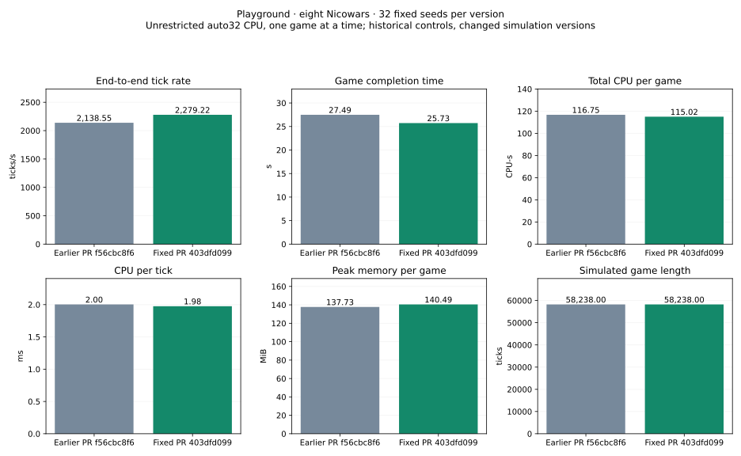
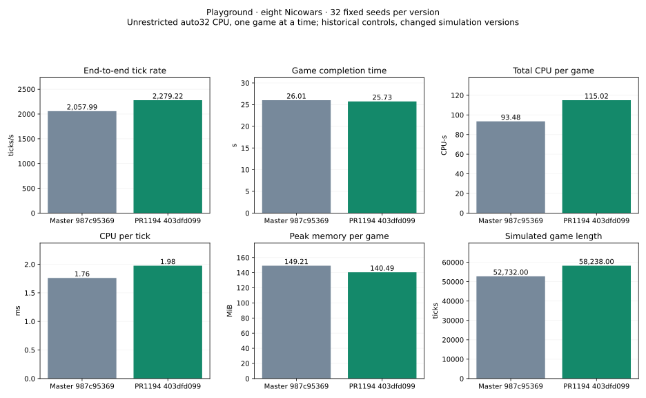

32 fixed seeds · Playground 128×128 · eight Nicowars · CPU backend · unrestricted auto32 · one game at a time. All 32 games finished with a winner; no caps.
The fix removes a reverse destination-registry lookup for queued gradient requests during routine checksumming. Tested head403dfd099, previous PR f56cbc8f6, master987c95369.
| Mean per game | Master | Previous PR | Fixed PR |
|---|---|---|---|
| End-to-end ticks/s | 2,057.993 | 2,138.548 | 2,279.217 |
| Completion time(s) | 26.014 | 27.486 | 25.728 |
| Total CPU/game(CPU-s) | 93.480 | 116.748 | 115.023 |
| CPU per tick(ms) | 1.761 | 2.003 | 1.976 |
| Mean peak RSS(MiB) | 149.208 | 137.730 | 140.486 |
| Game length(ticks) | 52,732.000 | 58,238.000 | 58,238.000 |
| Metric | Change | Paired 95% interval |
|---|---|---|
| End-to-end ticks/s | +6.58% | [+5.98%, +7.21%] |
| Completion time(s) | -6.39% | [-7.02%, -5.80%] |
| Total CPU/game(CPU-s) | -1.48% | [-2.19%, -0.79%] |
| CPU per tick(ms) | -1.39% | [-2.13%, -0.65%] |
| Mean peak RSS(MiB) | +2.00% | [+1.66%, +2.32%] |
| Game length(ticks) | +0.00% | [+0.00%, +0.00%] |
Detailed comparison · Raw audit and estimates

| Metric | Change | Paired 95% interval |
|---|---|---|
| End-to-end ticks/s | +10.75% | [+7.85%, +13.77%] |
| Completion time(s) | -1.10% | [-13.94%, +13.74%] |
| Total CPU/game(CPU-s) | +23.05% | [+7.91%, +40.29%] |
| CPU per tick(ms) | +12.21% | [+8.79%, +15.84%] |
| Mean peak RSS(MiB) | -5.85% | [-8.30%, -3.24%] |
| Game length(ticks) | +10.44% | [-2.81%, +25.84%] |
Detailed comparison · Raw audit and estimates

The checksum fix improves observed tick rate 6.58%, completion time 6.39% and CPU/tick 1.39% versus the previous PR. Peak RSS rises 2.00%. All 32 winners, finishing ticks and recorded order counts match the previous PR exactly. These observations are not full-state equivalence proof.
Against master, the fixed PR has 10.75% higher tick rate, 12.21% higher CPU/tick and 5.85% lower mean peak RSS. Whole-game completion time is not clearly different. Its games contain 10.44% more ticks on average; 23 winners differ from master. Gradient timing and trajectories differ, so this is not a same-trajectory master comparison.
Historical controls were not rerun or interleaved. Paired 10,000-draw intervals describe seed variability, not environment drift. One host/CPU/unrestricted auto32/serial regime only; no concurrent-throughput or GPU/platform-wide claim. No optional timing checksum or profiling telemetry. Golden trace and 64-tick auto32 smoke passed separately.